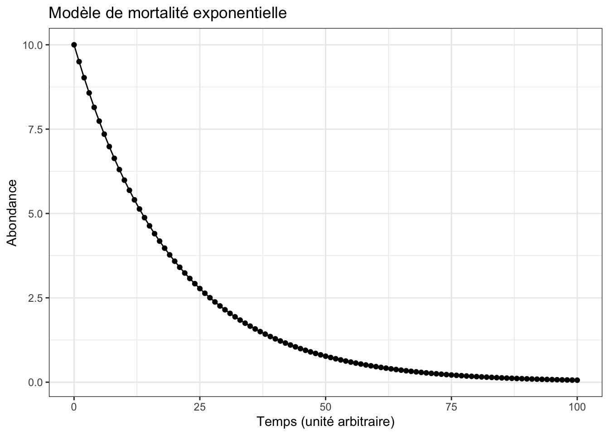
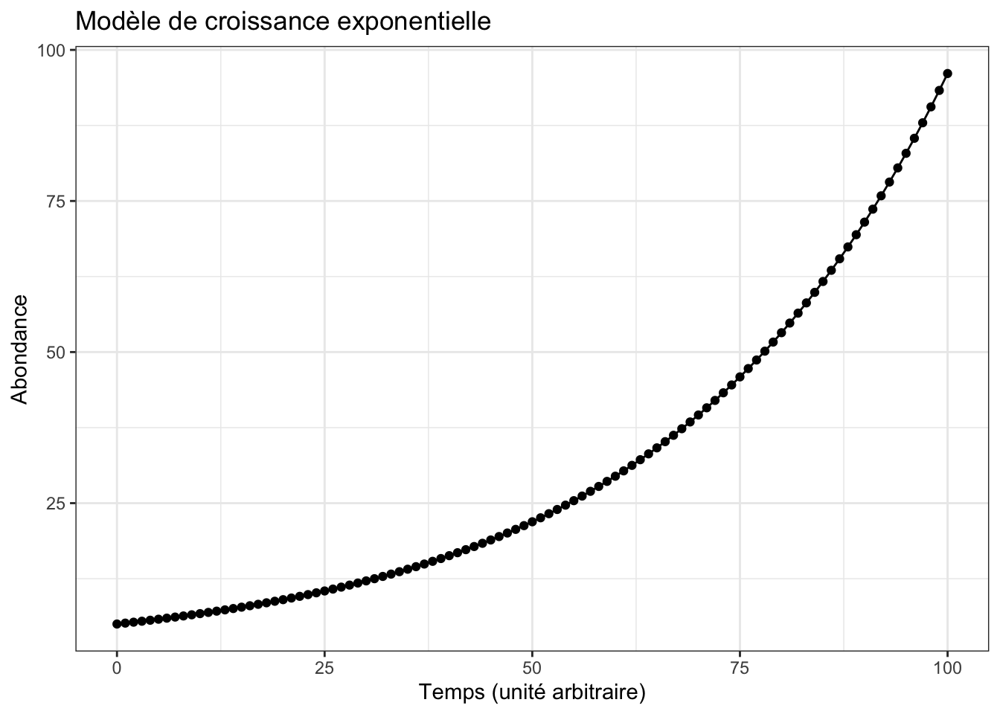
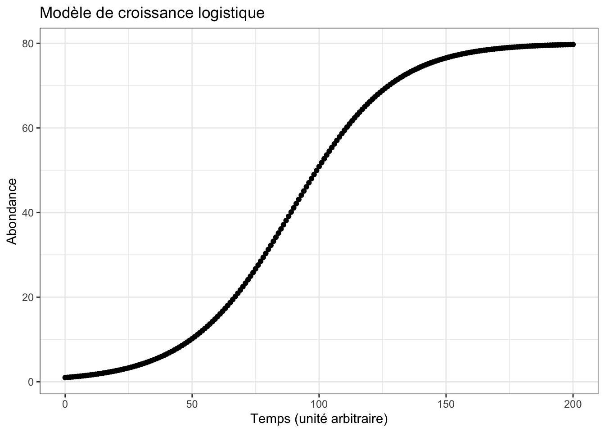
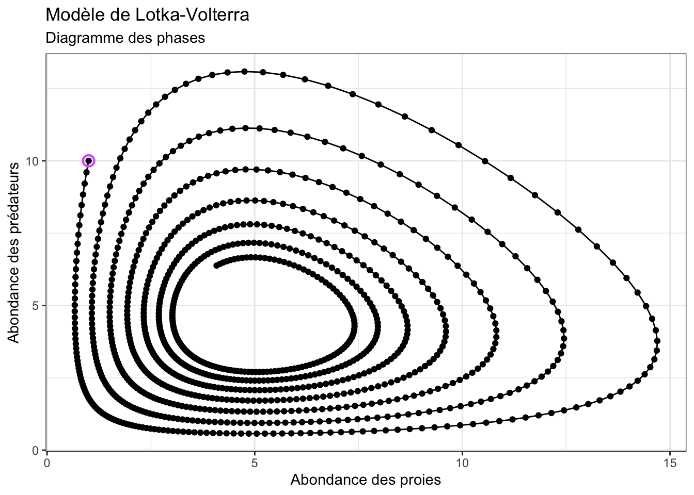
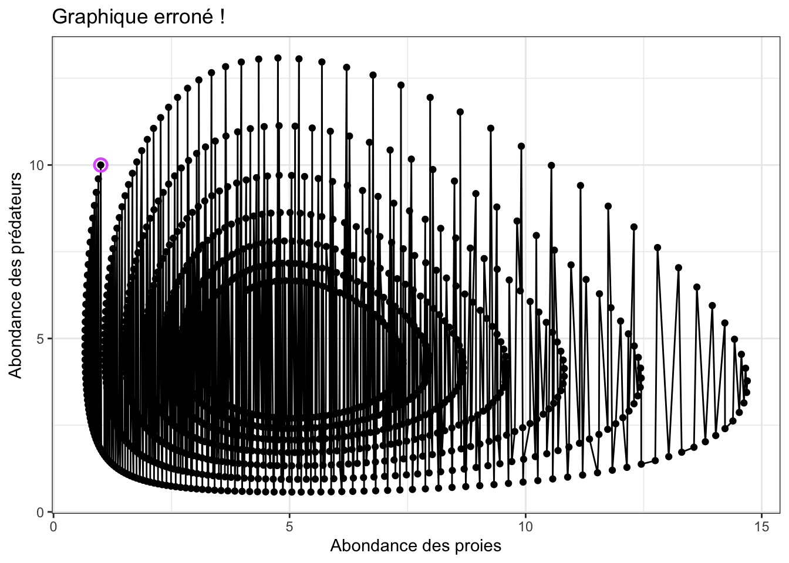
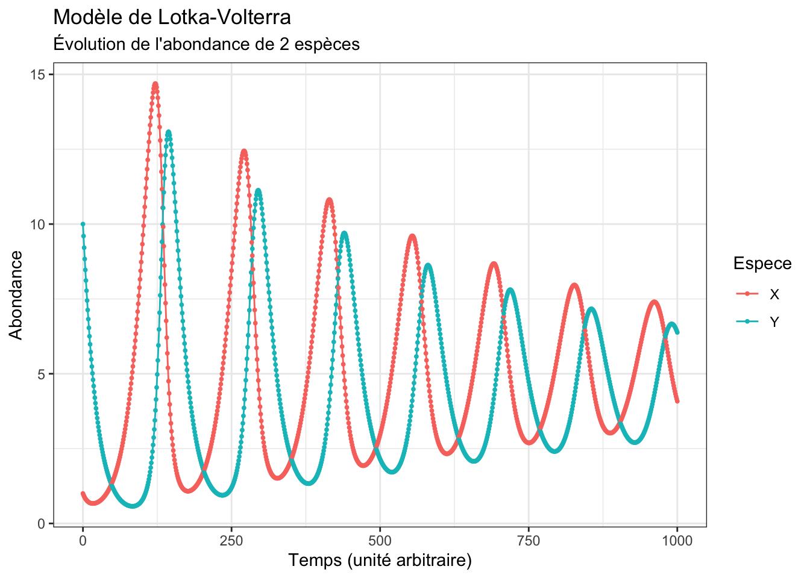
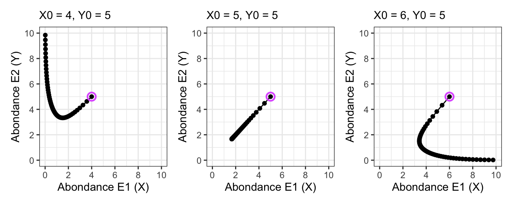
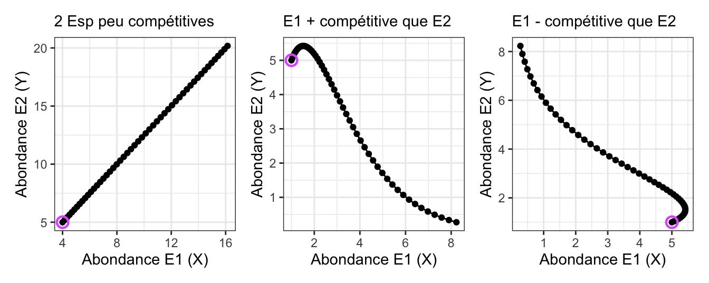
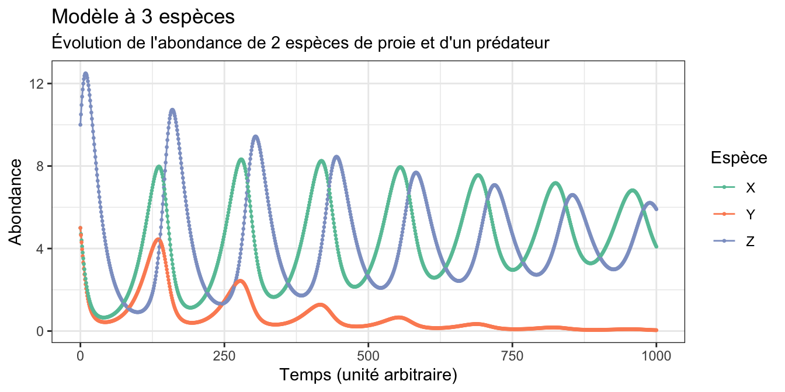

library(tidyverse)5.1 Objectifs
Dans ce chapitre, vous allez étudier plusieurs modèles dynamiques vus en cours :
- modèle de mortalité exponentielle
- modèle de croissance exponentielle
- modèle de croissance logistique
- modèle de Lotka-Volterra
- modèles de compétition
Pour cela, dans RStudio, vous devrez construire ces modèles en utilisant des boucles for (dont nous détaillerons la syntaxe à la Section 5.3) afin de décrire les variations d’abondance des populations étudiées au cours du temps. Quand ces modèles seront construits, vous devrez en faire varier les conditions initiales et les valeurs des paramètres, afin d’observer le comportement du modèles dans des conditions variées.
Pour chaque modèle cité plus haut, vous allez donc tout d’abord simuler des données dans des conditions précises, en faire la représentation graphique, puis modifier les paramètres du modèle pour comprendre comment les différents termes (de croissance, de mortalité, d’interaction…) affectent les populations.
5.2 Pré-requis
Comme pour chaque nouveau chapitre, je vous conseille de travailler dans un nouveau script que vous placerez dans votre répertoire de travail, et dans une nouvelle session de travail (Menu Session > Restart R). Inutile en revanche de créer un nouveau Rproject : vous pouvez tout à fait avoir plusieurs script dans le même répertoire de travail et pour un même Rproject. Comme toujours, consultez le livre en ligne du semestre 3 si vous ne savez plus comment faire.
Si vous êtes dans une nouvelle session de travail (ou que vous avez quitté puis relancé RStudio), vous devrez penser à recharger en mémoire les packages utiles. Dans ce chapitre, vous aurez uniquement besoin des packages du tidyverse (Wickham 2023), en particulier les package dplyr (Wickham, François, et al. 2023), pour manipuler des tableaux, et ggplot2 (Wickham, Chang, et al. 2023) pour les représentations graphiques.
Nous n’aurons pas besoin ici d’importer de données depuis des fichiers externes : nous allons en effet générer directement des données à partir de différents modèles démographiques vus en cours.
Comme toujours, je spécifie une fois pour toutes le thème que j’utiliserai pour tous les graphiques de ce chapitre. Libre à vous de choisir un thème différent ou de vous contenter du thème proposé par défaut :
theme_set(theme_bw())5.3 Les boucles for
Dans tous les langages de programmation, les boucles permettent de répéter automatiquement les mêmes actions un grand nombre de fois. Il existe plusieurs types de boucles, mais les boucles for sont les plus communes. Dans R, chaque boucle for possède 3 éléments :
La sortie. Avant d’exécuter la boucle, vous devez toujours créer de façon explicite un objet qui contiendra les résultats des calculs effectués à l’intérieur de la boucle. Une bonne façon de créer un vecteur vide pour stocker des valeurs numériques consiste à utiliser la fonction
numeric()La séquence pour laquelle vous souhaitez “faire tourner la boucle”. Dans une boucle
for, vous devez indiquer un indice qui spécifie le nombre d’itérations que la boucle doit effectuer. Par exemple :for (i in 1:10)indique que les commandes qui figurent à l’intérieur de la boucle devront être exécutées 10 fois, une fois pour chaque valeur de
i, c’est-à-dire 1, 2, 3… jusqu’à 10. Pour chaque exécution des commandes de la boucle, l’indiceiprendra donc une valeur différente comprise entre 1 et 10.Le corps de la boucle. Il est constitué des commandes que l’on souhaite faire exécuter à la boucle, et il doit obligatoirement être encadré par des accolades
{ }.
Voilà un exemple de boucle très simple :
# Création d'un vecteur numérique vide
res <- numeric()
# Pour chaque valeur de i comprise entre 1 et 5
for (i in 1:5) {
res[i] <- 3 * i - 1 # Calcule 3 * i - 1
}
# Affichage des résultats
res[1] 2 5 8 11 14Les boucles peuvent faire des choses beaucoup plus complexes. Par exemple, supposez que vous avez une première valeur de 100, et que vous souhaitez diviser cette valeur par 2, puis que vous souhaitez diviser le résultat par 2, et ainsi de suite, 10 fois. Voilà comment faire ça avec une boucle for :
# Création d'un vecteur numérique vide
res <- numeric()
# Stockage de la valeur initialle dans cet objet
res[1] <- 100
# Pour chaque valeur de i comprise entre 2 et 11
for (i in 2:11) {
res[i] <- res[i - 1] / 2
}
# Affichage des résultats
res [1] 100.00000000 50.00000000 25.00000000 12.50000000 6.25000000
[6] 3.12500000 1.56250000 0.78125000 0.39062500 0.19531250
[11] 0.09765625Notez bien la position des accolades { et } dans le code ci-dessus. Leur position est importante, de même que les sauts de lignes. Notez aussi que dans cet exemple, i prend successivement les valeurs 2, 3, 4, … , 11, au lieu des valeurs 1, 2, 3, … , 10. En effet, on connait déjà la première valeur de res. On veut justement utiliser cette première valeur pour calculer la deuxième, la troisième et ainsi de suite. Si on souhaite répéter l’opération 10 fois de suite, il nous faut faire varier i de 2 à 11 inclus. Ici, nous avons en réalité calculé l’équation de récurrence suivante :
\[res_t = \frac{res_{t-1}}{2}\]
Vous savez maintenant comment fonctionnent les boucles for et vous devriez donc pouvoir construire votre premier modèle dynamique.
Attention
Dans R, le premier élément d’un objet occupe la position [1]. L’indice [0] n’existe pas. Il faut donc faire attention à ce que les indices choisis pour i dans l’expression for (i in ...) soient cohérents avec d’une part la position dans l’objet qui stockera les résultats, et d’autre part l’équation du système que l’on simule.
5.4 Modèle de mortalité exponentielle
Comme nous l’avons vu dans le cours, le modèle de mortalité exponentielle est défini par l’équation suivante :
\[\frac{\mathrm{d}N}{\mathrm{d}t} = -mN\] Avec \(N\), l’abondance de la population étudiée, \(t\), le temps et \(m\) le taux de mortalité instantané. Pour coder ce modèle dans RStudio, vous devez vous rappeler de la signification de cette équation différentielle. Elle indique que dans un intervalle de temps très court \(\mathrm{d}t\), la variation de l’abondance de la population \(\mathrm{d}N\) vaut \(-mN\). Autrement dit, entre 2 temps d’observation successifs (par exemple entre \(t\) et \(t + 1\), ou entre \(t - 1\) et \(t\)), l’abondance de la population passe de \(N\) à \(N - mN\). Ce modèle peut donc être décrit par l’équation de récurrence suivante :
\[N_{t+1} = N_t - m \times N_t\] ce qui est évidemment équivalent à
\[N_{t} = N_{t - 1} - m \times N_{t - 1}\] Cette dernière équation peut se lire ainsi : l’abondance au temps \(t\) (\(N_t\)) est égale à l’abondance au temps précédent \(N_{t-1}\), plus la variation d’abondance entre 2 pas de temps successifs (\(-m\times N_{t-1}\)). Vous devez utiliser cette équation pour construire le modèle de mortalité exponentielle à l’intérieur d’une boucle for comme dans le dernier exemple de la Section 5.3. Ici, on cherche donc à déterminer la nouvelle valeur de la variable (\(N\) au temps \(t\)) en utilisant la valeur de la même variable mais au temps précédent (\(N\) au temps \(t-1\)).
Plusieurs étapes sont donc nécessaires :
Créez un vecteur
Nqui sera utilisé pour stocker les résultats des calculs à chaque étape de simulation. Utilisez la commande suivante :# Création d'un vecteur numérique qui contiendra les résultats N <- numeric()Fixez l’abondance initiale de la population à \(N_0 = 10\)
Fixez le taux de mortalité instantanée à \(m = 0.05\) (à chaque pas de temps, 5% de la population disparaît)
Placez l’abondance initiale à la première position de
NCréez une boucle
forpour calculer et placer dansNl’abondance de la population pour 100 pas de tempsCréez un tibble nommé
rescontenant 2 variables (GenerationetAbondance) en utilisant cette commande :# Création d'un tibble où les résultats seront stockés res <- tibble(Generation = 0:100, N)
Si votre script est correct et qu’il s’exécute sans erreur, l’objet res devrait contenir 101 lignes, avec 101 valeurs d’abondance. Les premières lignes de res devraient contenir ces valeurs :
# A tibble: 101 × 2
Generation N
<int> <dbl>
1 0 10
2 1 9.5
3 2 9.02
4 3 8.57
5 4 8.15
6 5 7.74
7 6 7.35
8 7 6.98
9 8 6.63
10 9 6.30
# ℹ 91 more rowsVisualisez ces données avec ggplot2. Votre graphique devrait ressembler à ceci :

Pour comprendre ce modèle…
Essayez d’utiliser plusieurs valeurs différentes pour \(N_0\) et relancez tout le script. Que se passe-t-il quand \(N_0\) est très grand ? Est-ce normal ?
Enfin, essayez de changer la valeur de \(m\) et de relancer le script. Faites des essais avec plusieurs valeurs. Qu’observe-t-on quand la valeur de \(m\) se rapproche de 1 ? Est-ce normal ? Et que se passe-t-il si \(m > 1\) ? Est-ce réaliste ? Pourquoi ? Mêmes questions avec \(m = 2\) et \(m = 3\) ?
5.5 Modèle de croissance exponentielle
Comme nous l’avons vu dans le cours, le modèle de croissance exponentielle est défini par l’équation suivante :
\[\frac{\mathrm{d}N}{\mathrm{d}t} = rN\] Avec \(N\), l’abondance de la population étudiée, \(t\), le temps et \(r\) le taux de croissance instantané. Pour coder ce modèle dans RStudio, vous devez vous rappeler de la signification de cette équation différentielle. Elle indique que dans un intervalle de temps très court \(\mathrm{d}t\), la variation de l’abondance de la population \(\mathrm{d}N\) vaut \(+rN\). Autrement dit, entre 2 temps d’observation successifs (par exemple entre \(t\) et \(t + 1\), ou entre \(t - 1\) et \(t\)), l’abondance de la population passe de \(N\) à \(N + rN\). Ce modèle peut donc être décrit par l’équation de récurrence suivante :
\[N_{t+1} = N_t + r \times N_t\] ce qui est évidemment équivalent à
\[N_{t} = N_{t - 1} + r \times N_{t - 1}\] Cette dernière équation peut se lire ainsi : l’abondance au temps \(t\) (\(N_t\)) est égale à l’abondance au temps précédent \(N_{t-1}\), plus la variation d’abondance entre 2 pas de temps successifs (\(+r\times N_{t-1}\)). Vous devez utiliser cette équation pour construire le modèle de mortalité exponentielle à l’intérieur d’une boucle for comme dans le dernier exemple de la Section 5.3. Ici, on cherche donc à déterminer la nouvelle valeur de la variable (\(N\) au temps \(t\)) en utilisant la valeur de la même variable mais au temps précédent (\(N\) au temps \(t-1\)).
Vous fixerez l’abondance initiale à \(N_0 = 5\) et le taux de croissance instantané à \(r = 0.03\). Vous calculerez l’abondance de la population pour 100 pas de temps. Vous devriez ainsi obtenir les résultats suivants :
# A tibble: 101 × 2
Generation N
<int> <dbl>
1 0 5
2 1 5.15
3 2 5.30
4 3 5.46
5 4 5.63
6 5 5.80
7 6 5.97
8 7 6.15
9 8 6.33
10 9 6.52
# ℹ 91 more rows
Pour comprendre ce modèle…
Comme pour le modèle de mortalité exponentielle, essayez plusieurs valeurs pour la condition initiale \(N_0\) et pour le paramètre du modèle \(r\). Que se passe-t-il quand \(r = 1\) ? Examinez les première valeurs d’abondance dans le tableau res pour vous faire une meilleure idée. Est-ce réaliste ? Que se passe-t-il quand \(r > 1\) ? Est-ce possible dans la nature ?
5.6 Modèle de croissance logistique
À partir du modèle de croissance exponentielle construit à la Section 5.5, vous devez maintenant construire un modèle de croissance logistique qui est défini par l’équation suivante :
\[\frac{\mathrm{d}N}{\mathrm{d}t} = rN - \frac{r}{K}\times N^2\] Avec \(N\), l’abondance de la population étudiée, \(t\), le temps, \(r\) le taux de croissance instantané, et \(K\) la capacité biotique (ou capacité de charge) du milieu. Comme toujours, commencez par écrire cette équation sous forme d’une relation de récurrence :
\[N_{t} = N_{t - 1} + \cdots{}\] Rappelez-vous que la nouvelle abondance (au temps \(t\)) est égale à l’ancienne (au temps \(t-1\)), plus la variation d’abondance entre 2 pas de temps successifs, la formule de la variation étant fournie par la formule \(\frac{\mathrm{d}N}{\mathrm{d}t} = \cdots{}\)
Vous devez donc modifier le script de la Section 5.5 pour ajouter le terme d’auto-limitation lié à l’environnement \(\frac{r}{K}\times N^2\). Vous utiliserez les valeurs suivantes pour les conditions initiales et les paramètres du modèle :
- \(N_0 = 1\)
- \(r = 0.05\)
- \(K = 80\)
- durée de la simulation : 200 pas de temps
Vous devriez ainsi obtenir les résultats suivants :
# A tibble: 201 × 2
Generation N
<int> <dbl>
1 0 1
2 1 1.05
3 2 1.10
4 3 1.16
5 4 1.21
6 5 1.27
7 6 1.33
8 7 1.40
9 8 1.47
10 9 1.54
# ℹ 191 more rows
Pour comprendre ce modèle…
Modifiez les valeurs de \(N_0\), \(r\) et \(K\) l’une après l’autre, pour comprendre comment chaque paramètre affecte la cinétique observée. Que se passe-t-il quand \(N_0\) augmente ? Que se passe-t-il que \(N_0 > K\) ? Est-ce logique ? Pouvez-vous imaginer des situations réalistes où \(N_0 > K\) ? Quelle est l’unité de \(K\) ?
Enfin, que se passe-t-il si le terme d’auto-limitation du milieu est ajouté à la croissance exponentielle au lieu d’être soustrait ? Expliquez.
5.7 Modèle prédateur-proie de Lotka-Volterra
Vous allez maintenant étudier le modèle prédateur-proie tel que formulé par Lotka et Volterra et dont les éuqations vous ont été décrites dans le cours magistral de “fonctionnement des écosystèmes” :
\[ \left\{ \begin{array}{rcl} \displaystyle \frac{dX}{dt} & = & rX - \frac{r}{K}X^2 - c_1XY \\ & & \\ \displaystyle \frac{dY}{dt} & = & -mY + c_2XY \end{array} \right. \] avec \(X\), l’abondance des proies, \(Y\), l’abondance des prédateurs, \(r\) le taux de croissance instantanée des proies, \(K\) la capacité biotique du milieu, \(m\) le taux de mortalité instantanée des prédateurs, \(c_1\) l’effet négatif de la prédation sur les proies (i.e. la mortalité des proies causée par les rencontres avec les prédateurs) et \(c_2\) l’effet positif de la prédation sur les prédateurs (i.e. la croissance de la population de prédateurs causée par les rencontres avec les proies).
En utilisant la même démarche que précédemment, construisez un modèle de Lotka-Volterra avec les valeurs suivantes :
- Abondance initiale des proies : \(X_0 = 1\)
- Abondance initiale des prédateurs : \(Y_0 = 10\)
- Taux de croissance instantanée des proies : \(r = 0.05\)
- Taux de mortalité instantanée des prédateurs : \(m = 0.05\)
- Capacité biotique du milieu : \(K = 50\)
- Effet de la prédation sur les proies : \(c_1 = 0.01\)
- Effet de la prédation sur les prédateurs : \(c_2 = 0.01\)
- Durée de la simulation : 1000 pas de temps
Avec ce modèle, il vous faut calculer en parallèle l’abondance de 2 populations : celle des proies et celle des prédateurs.
Calcul simultané
Attention : il est impossible de calculer d’abord toutes les abondances des proies, puis ensuite toutes les abondances des prédateurs, dans 2 boucles for distinctes. À chaque nouveau pas de temps, au sein d’une unique boucle for, il faut :
- calculer la nouvelle abondance des proies à partir de l’abondance des proies et des prédateurs au temps précédent
- calculer la nouvelle abondance des prédateurs à partir de l’abondance des proies et des prédateurs au temps précédent
Au final, l’objet res qui contiendra les résultats de vos simulation devra donc posséder 3 colonnes :
- Une colonne
Generationcontenant le numéro des étapes de simulation (les pas de temps) - Une colonne
Xcontenant les abondances de la population de proies à chaque étape de simulation - Une colonne
Ycontenant les abondances de la population de prédateurs à chaque étape de simulation
Avec ce tableau res, vous devriez pouvoir produire le diagramme des phases suivants :

Pour faire ce graphique, vous aurez besoin d’utiliser la fonction geom_path() au lieu de geom_line(). En effet, geom_line() relie les points d’un graphique par ordre d’abscisse croissant :

Ça n’est pas ce que nous voulons obtenir ! On souhaite relier les points par ordre chronologique, donc dans l’ordre où ils apparaissent dans le tableau res.
Enfin, pour mieux visualiser la dynamique de ces deux populations au cours du temps, produisez le graphique suivant :

Pour produire ce graphique, vous aurez besoin de transformer le tableau res en format long. Une colonne Espece devra contenir soit X, soit Y, et une colonne Abondance devra contenir toutes les valeurs d’abondance des 2 espèces. Si vous ne savez plus comment faire, relisez le chapitre 1.3 du livre en ligne du semestre 4. Voilà à quoi devraient ressembler les premières lignes de votre tableau :
res_long# A tibble: 2,002 × 3
Generation Espece Abondance
<int> <chr> <dbl>
1 0 X 1
2 0 Y 10
3 1 X 0.949
4 1 Y 9.6
5 2 X 0.904
6 2 Y 9.21
7 3 X 0.866
8 3 Y 8.83
9 4 X 0.832
10 4 Y 8.47
# ℹ 1,992 more rows
Pour comprendre ce modèle…
Expérimentez et tentez de répondre aux questions suivantes :
- Quelle sera l’issue de ce modèle prédateur-proie ? Augmentez la durée de simulation pour le prouver.
- Quelles seront les abondances des proies et des prédateurs quand l’équilibre sera atteint ?
- Modifiez la capacité biotique de la proie. QUe se passe-t-il quand vous l’augmentez ? Que se passe-t-il quand vous la diminuez ? Est-ce normal ? Est-ce ce à quoi vous vous attendiez ?
- Que se passe-t-il quand vous modifiez les valeurs des autres paramètres du modèle (\(r\), \(m\), \(c_1\) et \(c_2\)) ?
- Trouvez une combinaison de valeurs qui produisent un système à l’équilibre dynamique (i.e. un système d’oscillations harmoniques avec un diagramme des phases présentant un attracteur cyclique ou une courbe fermée)
- Est-ce que certaines combinaisons de paramètres produisent des résultats irréalistes ?
5.8 Modèle de compétition interspécifique
Dans sa forme la plus simple, on considère un système de compétition entre 2 espèces présentant un modèle de croissance logistique. La compétition ajoutera un terme de mortalité pour chaque espèce :
\[ \left\{ \begin{array}{rcl} \displaystyle \frac{dX}{dt} & = & r_1X - \frac{r_1}{K_1}X^2 - c_1XY \\ & & \\ \displaystyle \frac{dY}{dt} & = & r_2Y - \frac{r_2}{K_2}Y^2 - c_2XY \end{array} \right. \]
avec \(X\) et \(Y\) l’abondance des deux espèces, \(r_1\) et \(r_2\) les taux de croissance instantanée des deux espèces, \(K_1\) et \(K_2\) les capacités biotiques pour les 2 espèces, et \(c_1\) et \(c_2\) les effets négatifs de la compétition sur chacune des 2 espèces (i.e. la mortalité causée par les rencontres entre les deux espèces en compétition).
En modifiant le système prédateur-proie précédent, codez ce système de compétition et essayez de trouver une combinaison de paramètres et de valeurs initiales permettant de reproduire les 4 situations décrites en cours :
- Deux espèces très compétitives (avec différentes abondances initiales). Retrouvez-vous la ligne de catastrophe ?

- Deux espèces très peu compétitives
- Première espèce plus compétitive que la seconde
- Seconde espèce plus compétitive que la première

Pour comprendre ce modèle…
Attention à l’échelle des axes de vos graphiques. Pour bien comprendre ce qui se passe et retrouver les figures schématiques vues en cours, vous devez tenter de replacer les graphique produits ici dans un plan plus large.
Notez aussi que contrairement au modèle prédateur-proie, les modèles de compétition ne font pas apparaître de cycles sur les diagrammes des phases. L’évolution des abondances au cours du temps ne fait donc jamais apparaître d’oscillations.
5.9 Modèles à 3 espèces
Sur la base des chapitres précédents, vous devriez maintenant pouvoir construire des modèles plus complexes, par exemple à 3 espèces en compétition, ou à 3 espèces dont 2 proies en compétition et une espèce de prédateur. La clé est ici de ne pas oublier de termes lorsque l’on construit le modèle : pour chaque espèce supplémentaire dans le modèle, la complexité augmente singulièrement. En effet, une espèce signifie une équation de plus dans le système, mais également des termes d’interaction supplémentaires dans les équations déjà existantes.
Par exemple, si on considère un système dans lequel 3 espèces sont présentes, deux espèces de proies en compétition et un prédateur, voilà à quoi ressemblent le système d’équations :
\[ \left\{ \begin{array}{rcl} \displaystyle \frac{dX}{dt} & = & r_1X - \frac{r_1}{K_1}X^2 - c_{12}XY - c_{13}XZ \\ & & \\ \displaystyle \frac{dY}{dt} & = & r_2Y - \frac{r_2}{K_2}Y^2 - c_{21}XY - c_{23}YZ \\ & & \\ \displaystyle \frac{dZ}{dt} & = & -mZ + c_{31}XZ + c_{32}YZ \end{array} \right. \]
Ce système de 3 équations comprend maintenant 11 paramètres : \(r_1\), \(r_2\), \(K_1\), \(K_2\), \(m\), \(c_{12}\), \(c_{21}\), \(c_{13}\), \(c_{23}\), \(c_{31}\) et \(c_{32}\).
Essayez de coder ce système et de produire une figure telle que la Figure 5.8.

Pour comprendre ce modèle…
Expérimentez et tentez de répondre aux questions suivantes :
- Pouvez-vous trouver une combinaison de paramètres conduisant à la coexistence des 3 espèces ?
- Pouvez-vous trouver une combinaison de paramètres conduisant à la coexistence de 2 des 3 espèces ?
- Que se passe-t-il si on augmente légèrement la capacité biotique de la première espèce ? À quelle espèce cela devrait profiter le plus ? Est-ce ce que l’on observe ? Cela vous paraît-il logique ?
- Dans le système d’équation ci-dessus, êtes-vous capables d’identifier à quoi correspondent chacun des termes ? Quels sont les termes qui rendent comptent de la compétition ? Quels sont les termes qui rendent compte de la prédation ?